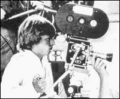

CHAPTER
THREE
The Young Rulers
In December 1980, the long-dormant post of Executive
Director International was resurrected. It had remained vacant since Hubbard's supposed
resignation in 1966. Scientologists the world over were aware that Hubbard, the Founder,
Commodore and Source, was the real head of their Church, but under the new corporate
strategy, it was necessary to conceal Hubbard's control. The new Executive Director
International was Bill Franks, and he was to be "ED Int for life." 1 It turned out to be a very short life. Scientologists the
world over assumed that Franks was Hubbard's immediate junior, and was being groomed to
succeed the Commodore.
Hubbard's legal situation was worsening. Early in
1981, the All Clear Unit was set up at the Commodore's Messenger Organization
International ("CMO Int") reporting directly to the Commanding Officer CMO, who
was also chairwoman of the Watchdog Committee. The unit's purpose was to make it "All
Clear" for Hubbard to come out of hiding.
 David Miscavige (right) was a
cameraman with the CMO Cine Org in 1977, at the age of seventeen, and had gained a
reputation for bulldozing through any resistance. Miscavige could get things done, and had
even been known to stand his ground before Hubbard. His parents were Scientologists, and
his older brother, Ronnie, was also in the CMO. David Miscavige had trained as an Auditor
at Saint Hill at the age of fourteen. He was not a long-term Messenger, but his dogged
determination led to rapid promotion
One of Miscavige's former superiors had this to say of
"DM" as he is usually known: "When he's under control ... he's a very
dynamite character .... He is willing to take on and confront anything." And this
despite Miscavige's touchiness about being little over five feet tall and asthmatic.
The Guardian's Office had failed Hubbard. Mary Sue,
the Controller, never saw him again after their meeting a few months before his
disappearance early in 1980. According to Hubbard, mistakes do not just happen, somebody
causes them, always. Mistakes and accidents are the result of deliberate Suppression. A
catastrophe as big as the government case against the GO was obviously the result of a
very heavyweight Suppressive. Hubbard could not admit that the GO had merely been
following his orders, so rather than reforming his views, he set out to reform the GO.
In 1979, Hubbard had issued a so-called
"Advice" (an internal directive with limited distribution) stating that when
situations really foul-up there is more than one Suppressive Person at work. Further,
those who have submitted to the SPs, the SP's "connections," also have to be
rooted out. The GO, and all of the "connections" within and around it, had to be
purged. Ironically, the GO had finally persuaded Hubbard that his hand must not be seen in
the management of Scientology, so the All Clear Unit became Hubbard's instrument. The
Suppressive-riddled GO had to be removed completely; but it had to be removed with
dexterity, because it was the most powerful force in Scientology. Everyone concerned had
to be sure that the orders were coming from Hubbard, but there must be no tangible
evidence.
If the GO had believed there was a palace revolution
in progress they would have been perfectly capable of destroying the tiny CMO. There were
1,100 GO staff, most of them seasoned, their leaders well known in the Scientology world.
There were a score of Messengers at CMO Int, and despite their newly acquired role in
management, they were virtually unknown to the vast majority of Scientologists.
The CMO's first task was to remove the Controller. In
May 1981, David Miscavige, by now twenty-one, met with Mary Sue Hubbard. He told her that
as a convicted criminal her position in the Church was an embarrassment. The attorneys had
suggested that as long as she remained in an administrative position her husband was
implicated in all Scientology affairs, including the burglaries. Miscavige doubtless
reminded her that the appeal of her prison sentence would probably be lost, and that when
it was lost the Church's public position would be far better if the Church was seen to
have disciplined her. Mary Sue screamed and raged, but Miscavige kept his bulldog grip on
the situation. He was immune to tirades, and probably smiled as he dodged the ashtray she
hurled at him. For her husband's good, the Controller finally stepped down. Afterwards she
decided she had been tricked, and sent letters of complaint to her husband. There was no
reply. She thought that her letters to her husband were being censored. They were, but on
her husband's order.
Gordon Cook became the new Controller, and the
Controller's Aides were replaced. The head of CMO, Diane "DeDe" Voegeding,
considered Mary Sue Hubbard her friend. Having spent her teenage years on the ship without
her parents, Mary Sue must have seemed almost a mother to her. Voegeding protested and was
removed from her position, ostensibly for divulging Hubbard's whereabouts to the
Guardian's Office.
Laurel Sullivan had been Hubbard's Personal Public
Relations Officer (Pers PRO) for years. She was part of the small Personal Office, and was
Armstrong's immediate superior on the biography project, as well as head of the huge
financial reorganization, Mission Corporate Category Son-out (MCCS). Sullivan too was a
close friend of Mary Sue Hubbard. MCCS was closed, and Laurel Sullivan was removed from
her post. Voegeding and Sullivan were both consigned to the Rehabilitation Project Force.
They were the first of hundreds of "connections" to be purged. 2
The CMO were responding to the belief, fostered by
Hubbard, that the U.S. government was working to smash Scientology. Through the collection
of unpaid taxes, the Internal Revenue Service was capable of destroying the parent Church
of Scientology of California. There was also a distinct danger that all the subsidiary
corporations would be sucked under with it. The Scientology Publications Organization U.S.
was re-incorporated as a for-profit corporation, called Bridge Publications. The
Publications Organization in Denmark became New Era Publications. A new Legal office was
established distinct from, and eventually controlling, the GO Legal Bureau. It was the
beginning of a proliferation of allegedly distinct and separate Scientology corporations.
The All Clear Unit (ACU) had to all intents become
autonomous under the control of David Miscavige. It was not subject to the CMO, the
Watchdog Committee, or any other Scientology entity. Miscavige took his orders only from
Pat Broeker, who in turn took his orders only from Hubbard.
In July 1981, ED Int. Bill Franks and a small group of
Messengers arrived at the headquarters of the U.S. Guardian's Office in Los Angeles. All
GO staff were ordered to join the Sea Org, and a Criminal Handling Unit was established.
Franks and his cohorts were there to remove the last real obstacle to CMO control of the
Guardian's Office, Jane Kember, the Guardian. Kember had received a prison sentence for
her part in the Washington burglaries, but was on bail pending an appeal. Upon hearing of
Franks' moves, Mary Sue Hubbard reappointed herself Controller, and rescinded her previous
permission for the CMO to investigate the GO. Franks and his team were physically ejected
from GO headquarters in Los Angeles. The locks were changed. Mary Sue appointed Jane
Kember Temporary Controller.
Franks, as Executive Director International,
maintained his occupation of the Controller's office itself, and Kember visited him there
with a group of GO heavies. Franks launched into an attack on Mary Sue Hubbard, among
other things accusing her of being a "squirrel" who practiced astrology.
Ignoring Franks' threats, Kember's crew removed the Controller's files, leaving Franks in
an empty office.
The GO took over an office in the former Cedars of
Lebanon complex, the home of most of the Scientology Orgs in Los Angeles. There the
Controller's files were guarded day and night. Mary Sue made a desperate bid to find her
husband, so that he could quash the CMO. For three days the screaming match continued,
with David Miscavige and other high-ranking Messengers joining in. They played on Kember's
fear of a schism in the Church. Eventually, she was shown an undated Hubbard dispatch
which suggested that the GO should be put under the CMO when its senior executives went to
prison. Jane Kember and Mary Sue Hubbard admitted defeat.
At the end of July, the new leaders of the Guardian's
Office issued "Cracking the Conspiracy" which assured Scientologists, "The
GO is now working around the clock to crack the conspiracy in the next six weeks. This is
not 'PR' or a 'gimmick.' It is the truth." Ironically, the conspiracy against
Scientology seemed to have emanated from the Guardian's Office itself.
The last vestige of resistance to the CMO takeover
would come from Guardian's Office headquarters, GO World Wide, at Saint Hill in England. A
CMO "Observation Mission" travelled to England, And on August 5 convened a
"Committee of Evidence" against leading members of the Guardian's Office. The
Committee was made up solely of Messengers, and chaired by Miscavige. The members were
found guilty. A CMO unit was established at Saint Hill, and Bill Franks, the Executive
Director International, issued a directive explaining that as Hubbard's management
successor he was senior in authority to the Guardian's Office.
The Findings and Recommendations of the Committee of
Evidence were not published. Senior GO officials were shipped to Gilman Hot Springs where
they underwent a "rehabilitation program." Messengers called them "the
crims," for criminals. These middle-aged Church executives were made to dig ditches,
and wait table for the young rulers. They were awakened in the middle of the night and
subjected to a new type of "Confessional." The privacy of the auditing session
was abandoned, along with the polite manner of the auditor. A group of Messengers would
fire questions, and while the recipient fumbled for an answer, yell accusations at him.
Answers were belittled, and the Messengers all yelled at once. The exhausted GO official
would be threatened with eternal expulsion from Scientology. The questions were also new.
The CMO was convinced that the GO had been infiltrated by "enemy" agencies, so
the "crims" were asked, "Who's paying you?" over and over again, and
accused of working for the FBI, the AMA or the CIA. This brutal form of interrogation came
to be known as "gang sec-checking." It was in total violation of the publicized
tenets of Scientology. GO staff began to crack under the pressure. Most of these hardened
executives eventually left Gilman willing to do the bidding of their new masters. The
Watchdog Committee assigned one of their number to the control of the Guardian's Office.
David Gaiman, the former head of GO Public Relations, became the new Guardian upon his
return from Gilman Hot Springs.
The great GO machine was grinding to a halt. Members
of the Legal Bureau, who understood the weak position of Scientology in many of the
increasing number of suits, wanted to settle out of court wherever possible, but were
overruled in favor of a fight to the death policy. The stalwarts of the Legal Bureau were
dismissed, and their place taken by expensive private law firms. Most of these suits were
eventually settled for far larger amounts than GO Legal had negotiated. The CMO was in
control of the entire administrative structure of Scientology. Although still in hiding,
Hubbard made himself available for comment, but only on matters of Scientology
"Tech," in September 1981. 3
While taking over the GO, the CMO had been
establishing yet another corporation called Author Services Incorporated (ASI). It was
incorporated in California in October 1981 as a for-profit company, and represented the
literary interests of L. Ron Hubbard. ASI was not activated for several months. A few
final adjustments had to be made to the Scientology corporate structure.
In November, Hubbard ordered the CMO to send him
information outlining the entire international position of Scientology. He wanted to know
all the "stats." It took two weeks to collect the information, and then it had
to be presented in a way which would demonstrate the efficacy of Hubbard's orders to the
CMO to take over Church management. Hubbard had trained Messengers to censor information
going to him to shield him from upsetting news. After the huge ritual of information
gathering, the CMO remained in power, so Hubbard was obviously happy with what he
received.
The various pans of the Organization continued to
function, largely unaware of the drastic changes that were taking place at the top. During
Hubbard's absence from direct management in 1980, the prices had been cut, and moves were
underway to reconcile estranged Scientologists. These measures were still penetrating to
the membership, as the new regime brought in stringent changes at the top. It was in this
setting, in November 1981, that Scientology Missions International, which monitored the
progress of the supposedly independent Mission, or "Franchise," network, called
a meeting to try and resolve some of the ongoing conflicts between Mission Holders and the
Church.
During the 1970s, several major Mission Holders had
been declared Suppressive, and their Franchises given to others. Most had exhausted
Scientology's internal justice procedures in an attempt to be reinstated and to retrieve
their Missions. A Mission Holder sometimes found himself in the peculiar position of
having invested most of his assets into his Mission, but after being declared Suppressive
was forced to surrender control to the Church's Mission Office, who would place the
mission under new management. The Mission Holder would have no access to his assets, which
often amounted to hundreds of thousands of dollars, and found it impossible to work his
way back into the good graces of Scientology. Several ousted Mission Holders had initiated
civil litigation against the Church.
Hubbard's published policy states that an individual
can be declared Suppressive for suing the Church. It was a Catch 22 situation. The
November 1981 meeting attempted to resolve this impasse by "open two-way
communication." Both the Mission Holders and the Sea Org's Scientology Missions
International staff felt progress had been made at the meeting. Both groups had failed to
comprehend what was happening at the very top of the Church.
Ray Kemp, a very early supporter of Hubbard and at one
time a close confederate, had been declared Suppressive in the mid-1970s, and his
California Mission taken from him. Shortly before Kemp and his wife were
"declared," a Church of Scientology publication had carried an article boasting
about the Kemp Mission in California which said the Mission consisted of five modern
buildings in two acres, with a parking lot for 200 cars. Kemp had even managed to persuade
the town council to rename the site of his Mission "L. Ron Hubbard Plaza."
Kemp had tried every recourse within the Church to
retrieve his Mission, but his efforts were to no avail. Eventually Kemp reluctantly
started civil legal proceedings against the Church, but only after alleged physical abuse
by members of the Guardian's Office. As a result of the first Mission Holders' meeting,
Kemp and his wife were restored to "good standing." A Board of Review was
established to investigate similar cases. Another meeting was scheduled to take place a
few weeks later.
Peter Greene, who had been a Mission Holder, made a
tape in 1982 describing the events of these meetings, and the background to them. The
Guardian's Office had grown increasingly worried that a series of moves by U.S. government
agencies might put the Church out of business. The FBI had acquired a huge quantity of
incriminating material, and the IRS suits might eventually bankrupt Scientology. Greene
alleges that since the mid-1970s there had been a Guardian's Office Program to take over
the Missions, which were separate corporations, if the worst happened. The leading Mission
Holders had been expelled, and replaced with new people who would be less willing to
resist the GO.
Shortly after the first Mission Holders' meeting, yet
another corporation came into being: the Church of Scientology International. It was to
become the "Mother Church," replacing the Church of Scientology of California.
The old lines of command had to be obscured by giving new titles to departments; for
example, Hubbard's Personal Office became the Product Development Office International. 4
The second Mission Holders' meeting was held at the
Flag Land Base in Florida in December 1981, in the Scientology owned Sandcastle Hotel. The
meeting was scheduled to last for two days, and fifty people arrived for the first day.
The swell of excitement took hold, the meeting continued for five days, and by the time it
was broken up, about two hundred people had attended. 5
The meeting was chaired by Mission Holder Dean Stokes.
Most of the Holders of larger Missions, and some of those deprived of their Missions, were
in attendance. Quite a few GO staff were also there, and the meeting turned into a mass
confessional, as those present gradually admitted the plans and actions taken secretly in
the past. Greene described the exhilaration as the Mission Holders, the Guardian's Office,
and Mission Office staff came back into touch with one another.
One executive was noticeably absent: Bill Franks, the
Executive Director International, who had called the meeting. The Mission Holders had
heard by now that the anonymous Watchdog Committee were Franks' superiors, despite the
Hubbard Policy Letter saying Franks was head of the Church. They demanded Franks'
presence. He arrived accompanied by a CMO missionaire.
One of the Mission Holders, Brown McKee, said he was
assigning the lowest of Hubbard's Ethics Conditions, "Confusion," to the
Watchdog Committee. The formula for completion of this Condition is simple: "Find out
where you are." The confusion was that WDC was ostensibly running the
Church, in contradiction to the Executive Director International Policy Letter, and
without any apparent authority. The Watchdog Committee was seen by the Mission Holders as
part of a mutinous takeover. Paradoxically, this was exactly how the Watchdog Committee
saw the Mission Holders.
The Mission Holders demanded the presence of the
Watchdog Committee. Mission Holder Bent Corydon, whose Riverside Mission had just been
returned to him, has joked that the Mission Holders were quite ready to fly out to Gilman
Hot Springs, and explain matters to the WDC "with baseball bats." Before this
could happen, representatives of the WDC arrived to quell the "Mutiny." 6
Senior Case Supervisor International David Mayo was
there, and rather lamely started giving a pep talk on new "Technical" research.
Mayo did not get very far. Norman Starkey, who had arrived with the WDC, and was actually
in charge of the Church's new non-GO legal bureau, tried to read a Hubbard article about
tolerance and forgiveness called "What Is Greatness?" He did not get very far
either. David Miscavige looked on, as the meeting broke up into smaller groups, with the
Mission Holders trying to explain their actions to the WDC representatives. Their attempts
were unsuccessful.
Unbeknownst to most of those at the meeting, there
really was a plan to wrest control from the Watchdog Committee. A small group of
Scientologists, including a few Mission Holders and veteran Sea Org members, took part in
this plot. It fell apart when one of their number reported their secret discussions.
Hubbard was given the CMO account of events, and
started to send dispatches to senior executives at Gilman describing the Mission Holders'
"mutiny," and an infiltration by enemy agents. Hubbard raged about Don Purcell
and the early days, when "vested interests" had tried to prise Dianetics from
his control. 7
Swift action was taken to counter the
"mutiny." On December 23, 1981, a Policy Letter was issued entitled
"International Watchdog Committee." Perhaps only a few people noticed that it
was not signed by L. Ron Hubbard, but by the International Watchdog Committee. It stated,
quite simply: "The International Watchdog Committee is the most senior body for
management in the Church of Scientology International."
Four days later, Executive Director International
"for life" Bill Franks was replaced. The coup was very nearly complete. In the
midst of this frantic activity, a redefinition of the revered state of Clear was issued
over Hubbard's name. All earlier definitions involving perfect recall, a complete absence
of psychosomatic ailments and the like, although true were no longer valid. The new
definition was a wonderful piece of circular reasoning, beautifully self-perpetuating in
its illogic: "A Clear is a being who no longer has his own reactive mind." 8
If one accepts the hypothesis of the reactive mind,
then a Clear does not have it. The definition does, however, imply that he could have the
reactive minds of others (Body Thetans?), and be as incapable as ever. No scientific
experiment could defeat this new definition. Dianetics would continue to pretend itself a
science, but remain beyond verification. It could neither be proven nor disproven, having
been moved squarely into the realm of faith.
FOOTNOTES
Additional sources:
correspondence with a former CMO executive; interview with former Guardian's Office
executive; Peter Green, taped talk, 23 June 1982
1. HCOPL, "The Executive
Director International," 11 December 1980
2. Sullivan in vol. 19A of
transcript of Church of Scientology of California vs. Gerald Armstrong, Superior
Court for the County of Los Angeles, case no. C 420153, pp.3144f
3. David Mayo letter, 8
December 1983
4. Litt in Armstrong
vol. 28, p.4734
5. McKee, vol. 4 of
transcript of Clearwater Hearings, 1982, pp.397ff
6. Bent Corydon, taped talk,
July 1983
7. Mayo letter 8 December
1983
8. HCOB, "The State of
Clear," 14 December 1981 |